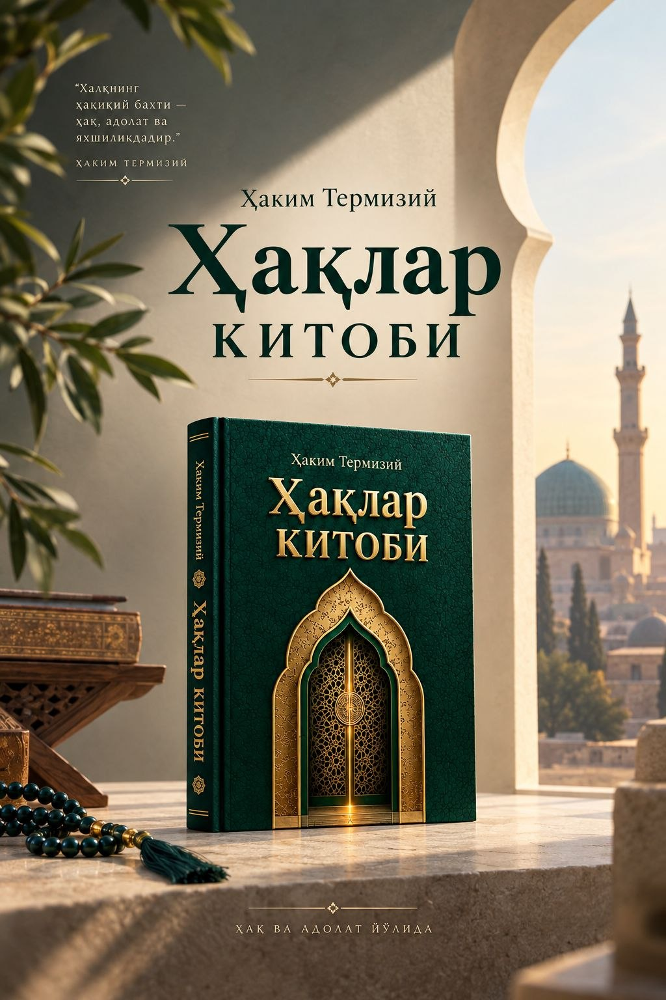

Haqlar kitobi
"Kitobul huquq" — IX asrning yirik mutasavvifi va faqihi Hakim Termiziy qalamiga mansub bo‘lib, inson va jamiyat o‘rtasidagi ijtimoiy, axloqiy va ma’naviy huquqlarni chuqur sharhlab beradigan noyob risoladir. Asar Qur’on va hadis asosida yozilgan bo‘lib, har bir shaxs yoki toifaga nisbatan mo‘min kishi zimmasidagi mas’uliyatni "marofiq" (ehson) tamoyili asosida tartiblaydi.
- Sahifalar264 bet
- MuqovaQattiq muqova
- MatnQo'lyozma, arab va o'zbek
Kitobni sotib olish uchun Telegram orqali murojaat qiling.
Asar 16 bobdan iborat bo‘lib, unda quyidagi toifalarning huquqlari tahlil qilinadi: Rasululloh sollallohu alayhi vasallam, sulton, olim, ota-ona, farzand, qo‘shni, ustoz, xizmatkor, imom, muazzin, tabib, g‘assol, muhtasib, harbiy, er-xotin, hatto hayvonlar. Har bir toifaga nisbatan qanday ehson va xizmatlar (marofiq) zohir bo‘lishi mumkinligi tushuntiriladi va aynan shu asosda ularga nisbatan qanday huquqlarni ado etish lozimligi bayon qilinadi. Asarning o‘zbek tilidagi ilk nashri tarixiy, axloqiy va tasavvufiy jihatlarni bir butun holda aks ettiruvchi bebaho manba sifatida ilmiy-amaliy qo‘llanma bo‘lib xizmat qiladi deb ishonamiz.